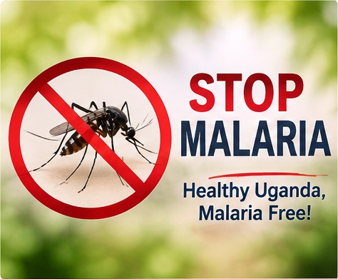
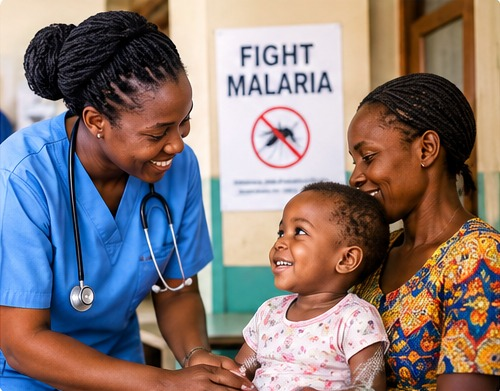
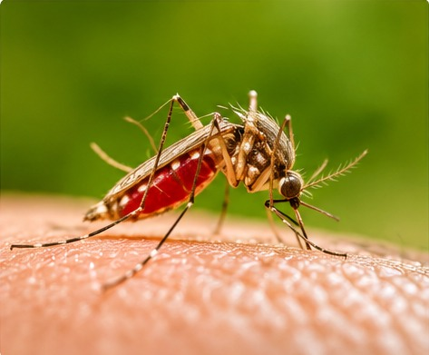
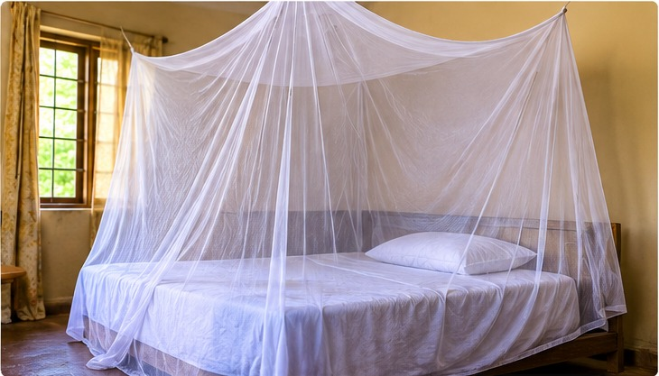

Welcome to Malaria Watch
Malaria Watch is focused on exploring and presenting malaria-related data in Uganda.
Our aim is to make malaria data easier to understand and acess through data analysis, visualisation and presentation.
Explore our website to learn about malaria, the data used in our project and the methods applied to analyse it.

About Malaria Watch
Malaria Watch is a group project that focuses on exploring malaria data in Uganda, analysing it and presenting it in a way that is understandable to the our website users.
The project involves collecting, cleaning, analysing and presenting data to help people understand
different aspects of malaria.
We use data analysis and visualisation to present information in a simple and understandable way.

Malaria Facts
Malaria is a life-threatening disease caused by Plasmodium parasites,
transmitted to humans through the bites of infected female Anopheles mosquitoes.
It is preventable and curable but can progress to severe illness and death if not treated promptly.
High-Risk Groups are infants, children under 5, pregnant women, and patients with HIV/AIDS are most vulnerable.
In Africa, children under 5 accounted for about 76% of all malaria deaths.
Malaria is not contagious—it cannot spread from person to person like a cold.
You get it solely from the bite of an infected mosquito.
Common Symptoms
- Fever
- Headaches
- Chills
- Muscle aches
- Vomiting
- General body weakness
Malaria can become serious if it is not tested
for and treated early.

Data Sources
We explored different sources of malaria-related data.
- Uganda Bureau of Statistics (UBOS)
- World Health Organization (WHO)
- Our World in Data
- Hugging Face Datasets
Data source used: Uganda Ministry of Health.
Data Cleaning and Preparation
We worked with 16 datasets obtained for analysis to come up with an elaborate project.
Our data cleaning process involved:
- Removing empty data rows.
- Finding and removing similar information.
We used Power BI to remove empty rows, handle
empty cells and organise data into suitable categories.
DAX Studio was then used to export the prepared data from Power BI into Excel files.
Data Visualisation
Data visualisation presents information using graphs and charts instead of relying only on numbers.
Our project uses different types of visualisations, including:
- Bar graphs
- Histograms
- Pie charts, where applicable
These visualisations make it easier to identify patterns and understand the information in the datasets.
View Data Visualisation
Data Relationships and Representation
Data relationships help us understand how information from different datasets is connected.
Tables and figures are used to present relationships between information from separate datasets.
This helps users compare information and identify possible connections within the data.
View Data Representation
Malaria Prevention
Malaria can be prevented through different practices that reduce exposure to infected mosquitoes.
- Sleep under treated mosquito nets.
- Use mosquito repellents.
- Wear protective clothing, especially in the evening.
- Remove stagnant water around the home.
- Keep the surroundings clean.
- Use window and door screens where possible.
- Seek early testing and follow prescribed treatment.
